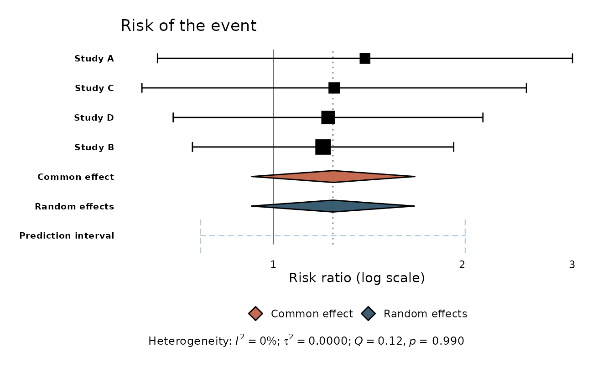
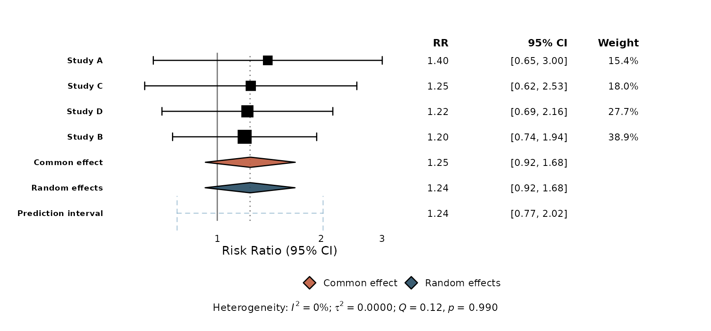
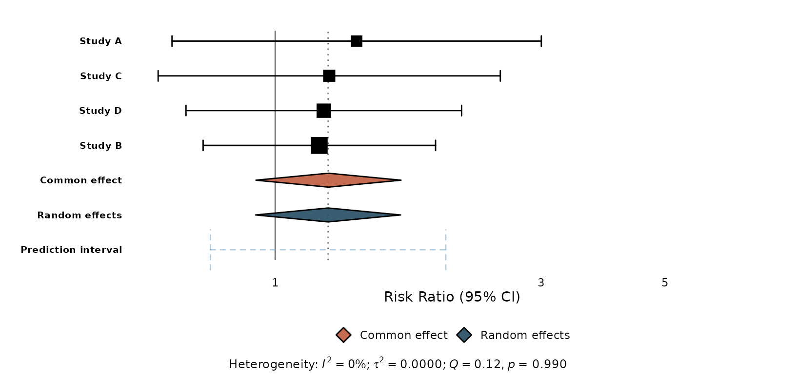

If you already use meta::forest(), this vignette shows
how ggmeta compares and how to reproduce familiar
output.
The same object, a ggplot result
meta::forest() draws directly to a graphics device with
a grid-based layout. ggmeta::ggforest() takes the
same meta object but returns a
ggplot:
library(meta)
#> Loading required package: metabook
#> Loading 'meta' package (version 8.5-0).
#> Type 'help(meta)' for a brief overview.
m <- metabin(
event.e = c(14, 30, 15, 22), n.e = c(100, 150, 100, 120),
event.c = c(10, 25, 12, 18), n.c = c(100, 150, 100, 120),
studlab = c("Study A", "Study B", "Study C", "Study D"),
sm = "RR"
)
# meta::forest(m) # base-graphics forest plot
ggforest(m) # the same analysis, as a ggplot
The practical difference: everything after ggforest() is
ggplot2. You compose with +, restyle with
theme(), add annotations, and save with
ggsave().
What maps to what
meta::forest() |
ggmeta |
|---|---|
forest(m) |
ggforest(m) |
col.square, col.diamond, … |
theme(), scale_*, layer aesthetics |
rightcols (effect, CI, weight) |
ggforest(columns = TRUE) |
custom leftcols / rightcols
|
geom_forest_text() + format_effect()
|
xlim, xlab, smlab
|
xlim(), labs(), or the xlab
argument |
layout = "JAMA" / "RevMan5"
|
layout_jama(), layout_bmj(),
layout_revman5()
|
prediction = TRUE |
drawn automatically when available |
| Study weights (square size) | weight-proportional squares by default |
Reproducing common tweaks
Relabel the axis and add a title. These are ordinary ggplot2 calls:

Add the effect / CI / weight columns — the
rightcols idea — with columns:
ggforest(m, columns = TRUE)
For a custom column (say a sample-size column of your own),
reach for geom_forest_text(). tidy_meta()
exposes the same tidy data frame ggforest() builds
internally, so you can align your own text to the rows:
td <- tidy_meta(m)
studies <- td[!td$is_summary, ]
studies$effect_txt <- format_effect(studies$estimate, studies$ci_lower, studies$ci_upper)
ggforest(m) +
geom_forest_text(aes(y = studlab, label = effect_txt), data = studies,
x = 4.2, hjust = 0) +
expand_limits(x = 7)
When to use which
- Reach for
meta::forest()when you want its exhaustive, print-ready defaults out of the box and don’t need to restyle. - Reach for
ggmetawhen you want a ggplot you can theme, compose, facet, and drop into an existing ggplot2 workflow — or when you only have a tidy data frame of effect sizes and nometaobject at all (seevignette("getting-started")).